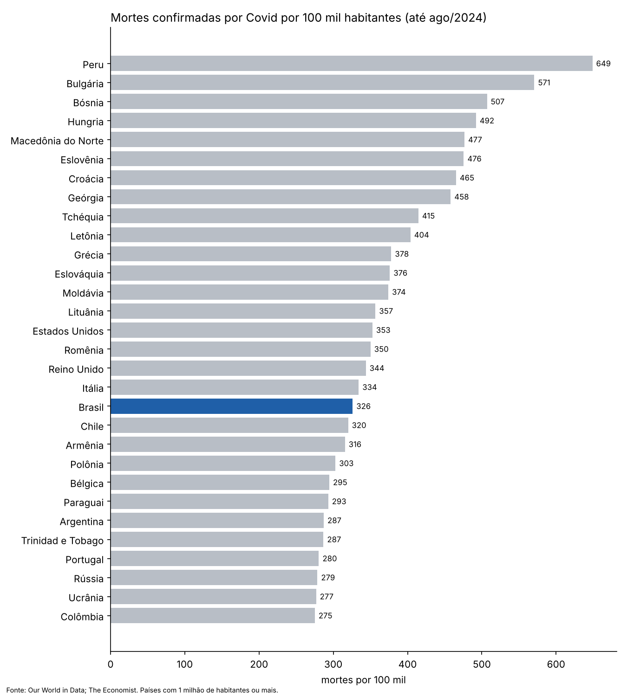
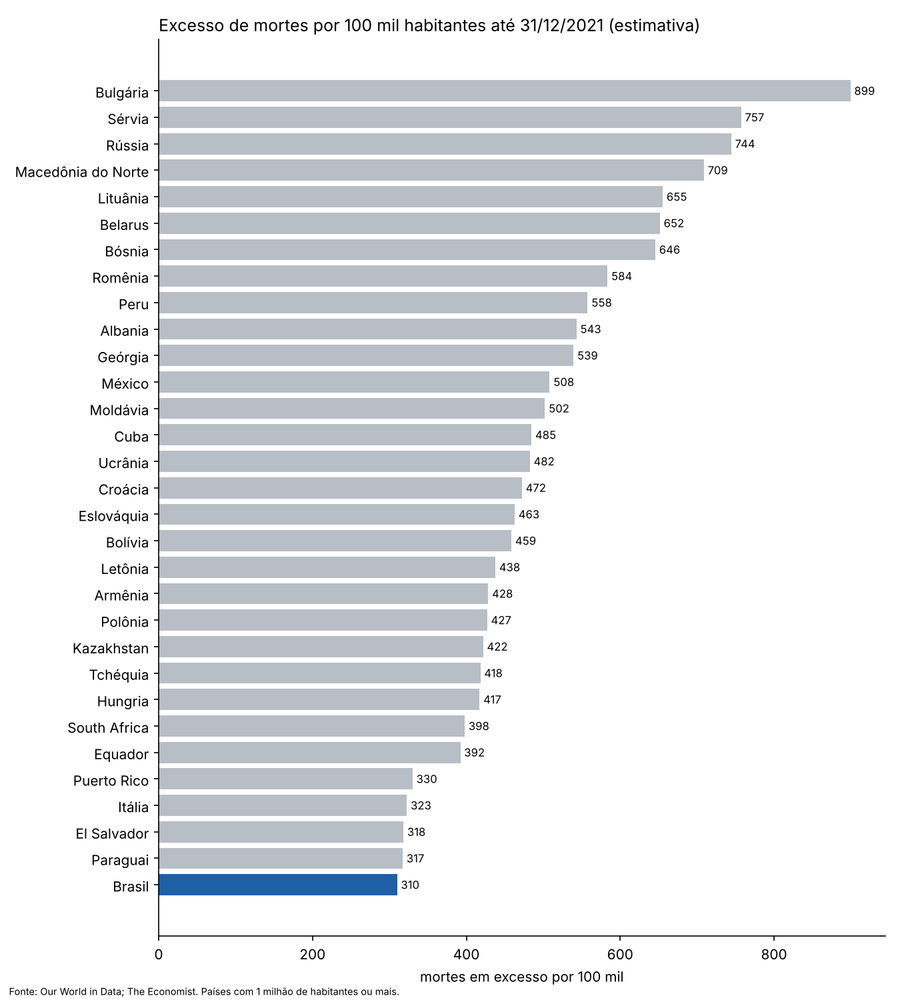
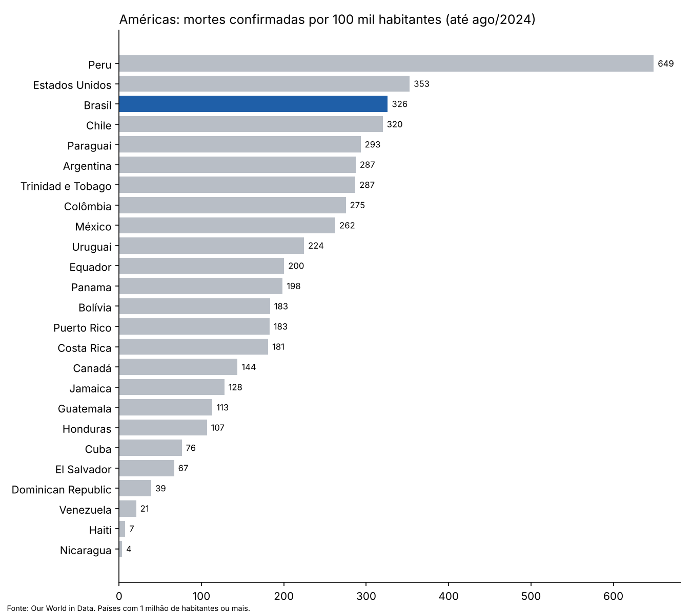
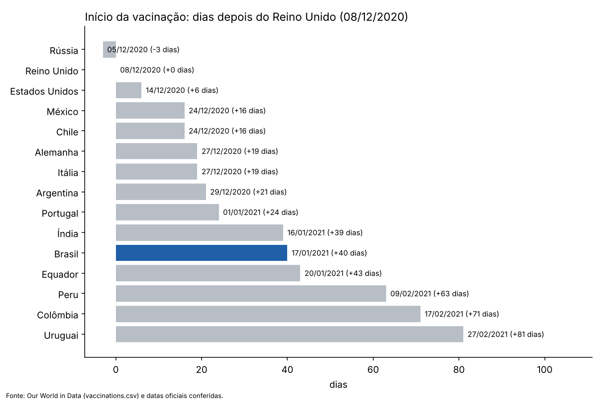
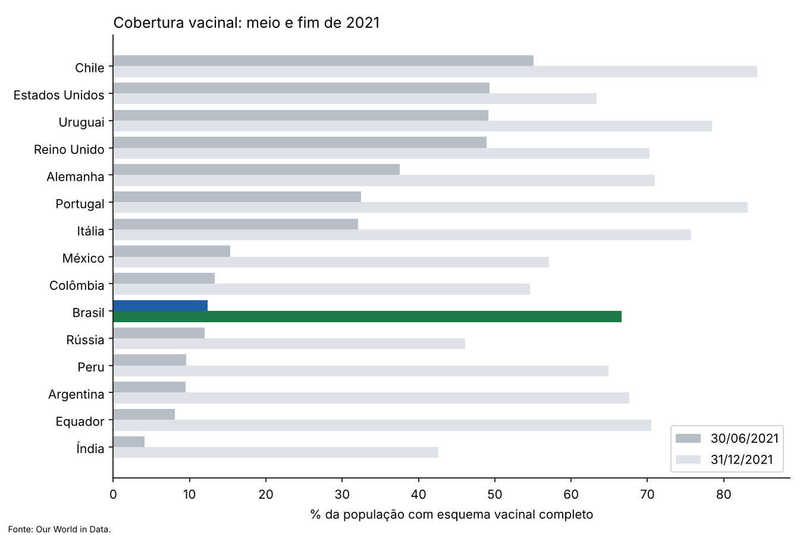

Memória, verdade e reparação
Este trabalho é dedicado às mais de 716 mil pessoas cuja morte por Covid-19 foi registrada pelo Ministério da Saúde, e às vidas que a pandemia levou além da contagem oficial: as estimativas de mortes acima do esperado passam de 850 mil só em 2020 e 2021 e chegam a cerca de 934 mil até 2024.
Estima-se que cada morte por Covid deixe cerca de nove parentes próximos de luto: avós, pais, irmãos, cônjuges e filhos. Aplicada só às mortes registradas, essa conta chega a cerca de 6,4 milhões de brasileiros (aproximação) que perderam alguém que amavam. Só em 2020 e 2021, cerca de 149 mil crianças e adolescentes perderam o pai, a mãe ou os dois.
Mortes registradas: Ministério da Saúde, 716.626 até 30/08/2025 (última atualização do painel oficial). Excesso de mortes: ≈ 934 mil pelo modelo do The Economist (até jun/2024) e 851 mil em 2020–2021 pelo painel do Conass, Vital Strategies e cartórios; são estimativas, com métodos diferentes, e incluem mortes indiretas. "Nove parentes por morte" é o multiplicador calculado nos EUA (Verdery et al., PNAS, 2020), usado como aproximação. Órfãos: Steyn et al., Lancet Regional Health – Americas, 2025. Fontes completas na página de Referências.
Mas, se ergues da justiça a clava forte,
Verás que um filho teu não foge à luta,
Nem teme, quem te adora, a própria morte.
Posição do autor · opinião, não é dado verificado
A Bandeira do Brasil é do povo. Ela pertence a todos os brasileiros e não deve servir a nenhum lado político. O Brasil é do seu povo.
O nome de D'us não deve ser profanado, nem as Escrituras. Profanar é desrespeitar o que é sagrado: tratá-lo sem reverência, rebaixá-lo ou usá-lo para fins que o desonram. Usar o nome de D'us ou passagens bíblicas para justificar o descaso com a vida é uma forma de profanação.
O povo judeu repete Zachor, "lembra-te", e mantém viva a memória do Holocausto para que ele nunca se repita. Lembrar não é reabrir feridas: é proteger quem vem depois. Este levantamento existe pelo mesmo motivo.
Pelo povo e para o povo brasileiro.
Nickolas Moretto · posicionamento do autor
Memória e números Investigação Caminho do dinheiro Seu estado
Tudo aqui é público. O trabalho foi reunir.
Nenhum documento deste levantamento veio de sigilo, vazamento ou acesso indevido. Tudo estava aberto a qualquer pessoa: o relatório final da CPI da Pandemia, acórdãos do TCU, decisões da CGU, do STF e do STJ, os painéis do Ministério da Saúde, as APIs da Câmara e do Senado, o cadastro de empresas da Receita Federal e a imprensa.
O que foi feito aqui não foi descobrir: foi reunir, datar e organizar. Cada documento ganhou uma cópia com data e hora e uma impressão digital (SHA-256), para que qualquer pessoa confira que o arquivo citado é o mesmo que está na fonte oficial. A informação estava espalhada por dezenas de sistemas; aqui ela está num lugar só, com o caminho de volta para a origem em cada item.
O que a lei garante
- Constituição, art. 5º, IX — é livre a expressão da atividade intelectual, artística, científica e de comunicação, independentemente de censura ou licença.
- Constituição, art. 5º, XIV — é assegurado a todos o acesso à informação.
- Constituição, art. 5º, XXXIII — todos têm direito a receber dos órgãos públicos informações de interesse coletivo ou geral.
- Constituição, art. 37 — a administração pública obedece ao princípio da publicidade.
- Constituição, art. 220 — a manifestação do pensamento, a criação, a expressão e a informação não sofrerão qualquer restrição.
- Lei 12.527/2011, art. 3º — a Lei de Acesso à Informação põe a publicidade como preceito geral e o sigilo como exceção.
Textos oficiais: Constituição Federal · Lei 12.527/2011 · Lei 13.709/2018 (LGPD).
Liberdade não é licença para inventar
Poder publicar não autoriza afirmar qualquer coisa. Por isso a regra deste levantamento é a oposta da opinião fácil: todo fato tem fonte; atos a favor e contra ficam lado a lado; classifica-se o ato, nunca a pessoa; pedido de indiciamento não é condenação, e multa de órgão de controle não é pena criminal. Onde a fonte não alcança, o texto diz que não alcança, e a lacuna fica marcada.
Pelo mesmo motivo, o que é legitimamente reservado não entra: nada de CPF, endereço, telefone ou dado pessoal sensível de quem quer que seja, e nada de foto de quem não é agente público. O que está aqui é a atuação pública de quem exerceu função pública — e a LGPD ressalva expressamente o tratamento de dados para fins jornalísticos (art. 4º, II).
Encontrou um erro? Abra uma issue com a fonte ou escreva para brasil@transparenciadocaos.com. Correção feita entra com registro público.
O Brasil em números
Carregando dados…
As comparações entre países usam a série da OMS/Our World in Data (até ago/2024) e consideram países e territórios com 1 milhão de habitantes ou mais.
Mortes por 100 mil habitantes no mundo
Dividir as mortes pela população permite comparar países de tamanhos diferentes. O Brasil aparece em azul.

Pelo excesso de mortes (mortes de qualquer causa acima do esperado), o Brasil fica em 33º: pior que a maioria, atrás de Peru, México, Rússia e boa parte do Leste Europeu, onde muitas mortes não foram registradas como Covid.


Quando cada país começou a vacinar
O Brasil aplicou a primeira dose em 17/01/2021: 40 dias depois do Reino Unido. O atraso coincidiu com o primeiro semestre de 2021, os meses mais mortais da pandemia no país; quanto ele pesou nas mortes é estimado por estudos, com faixas amplas (estudos e contra-argumentos). Quando as vacinas chegaram em volume, o SUS vacinou rápido.


O caso brasileiro: decisões do governo federal questionadas na CPI
- 30/07/2020: o Instituto Butantan ofereceu 60 milhões de doses da CoronaVac para o fim de 2020. Segundo Dimas Covas à CPI, não houve resposta.
- Agosto de 2020: a Pfizer fez três ofertas, com pelo menos 1,5 milhão de doses ainda em dezembro. Em 12/09/2020, o presidente da empresa escreveu ao governo: "até o momento não recebemos uma resposta".
- 21/10/2020: um dia depois de o ministro Pazuello anunciar 46 milhões de doses da CoronaVac, o presidente escreveu: "NÃO SERÁ COMPRADA". No dia seguinte, Pazuello: "um manda e o outro obedece".
- Falas: "gripezinha", "E daí?", "país de maricas", "se você virar um jacaré, é problema seu", e, em 04/03/2021, um dia depois de um recorde de mortes: "Chega de frescura, de mimimi. Vão ficar chorando até quando? […] A própria Bíblia diz 'Não temas'."
- Cloroquina: em 20/05/2020 o Ministério liberou o uso em casos leves, sem estudo que mostrasse benefício, e manteve a orientação depois que os grandes ensaios clínicos (jun–jul/2020) não mostraram benefício (o TCU mandou anular a nota de ago/2020, em 2025); Mandetta e o presidente da Anvisa confirmaram uma reunião no Planalto com proposta de mudar a bula para incluir a Covid. A Anvisa não aceitou.
- CPI da Covid: o relatório final (26/10/2021) pediu o indiciamento de 78 pessoas e 2 empresas. Pedido de indiciamento não é condenação, e até out/2026, até onde as fontes mostram, ninguém foi condenado pelos fatos apontados pela CPI.
- O que o governo federal também fez: contratou a encomenda tecnológica da vacina AstraZeneca com a Fiocruz (set/2020), a CoronaVac com o Butantan (46 milhões de doses em 07/01/2021 e mais 54 milhões em fev/2021), a Pfizer e a Janssen (mar/2021); pagou o auxílio emergencial a partir de abr/2020; e o SUS aplicou mais de 495 milhões de doses até o fim de 2022. Documentos no Caminho do dinheiro.
Cronologia completa · Mortes evitáveis: estudos e contra-argumentos · CPI · Roteiro do documentário
Abrir a investigação: rede de conexões, achados com provas e os votos da CPI →
Ver todos os envolvidos: o que cada um fez a favor e contra →
Dados abertos
Tudo pode ser baixado, conferido e reproduzido:
- Planilha dos 234 países e territórios (Excel) · CSV
- Envolvidos (CSV) · Atos com fonte (CSV)
- Referências: todas as fontes, com cópia arquivada e onde cada uma é usada
- Arquivo de fontes: cópias datadas e documentos oficiais na íntegra
- Como verificamos · Revisão independente